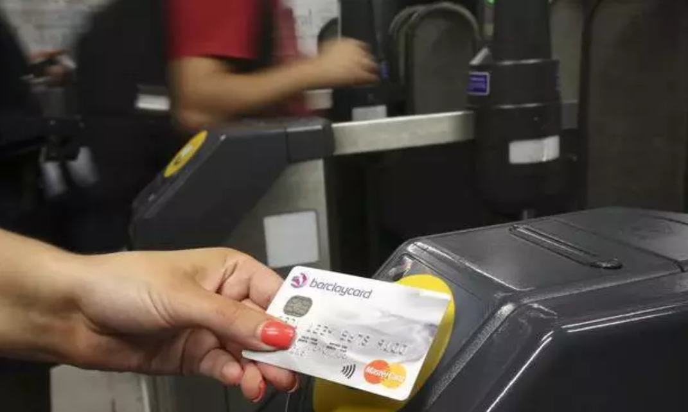
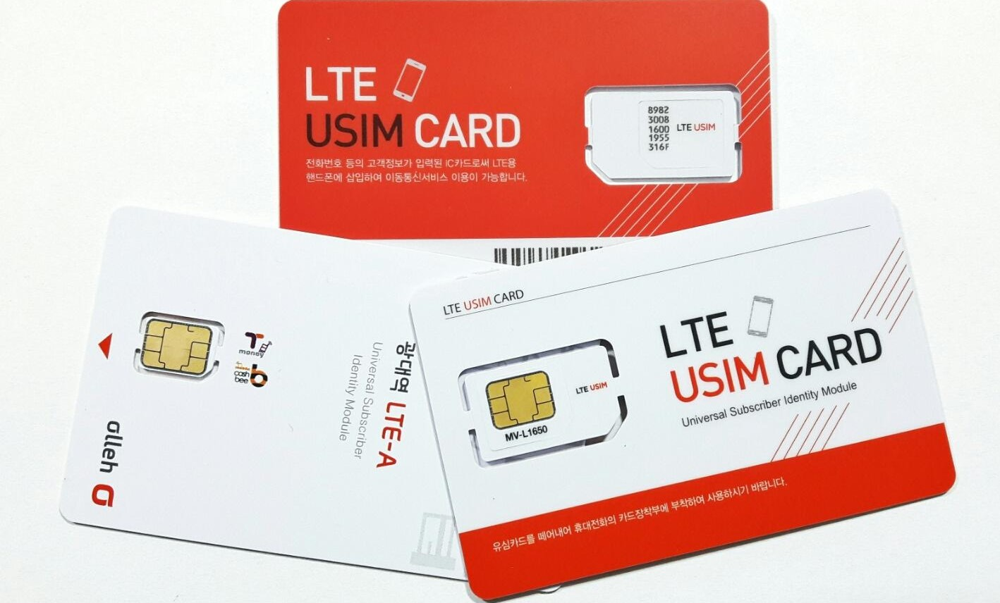
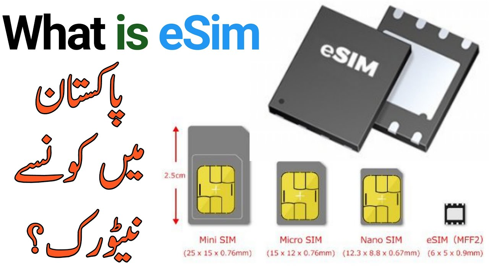
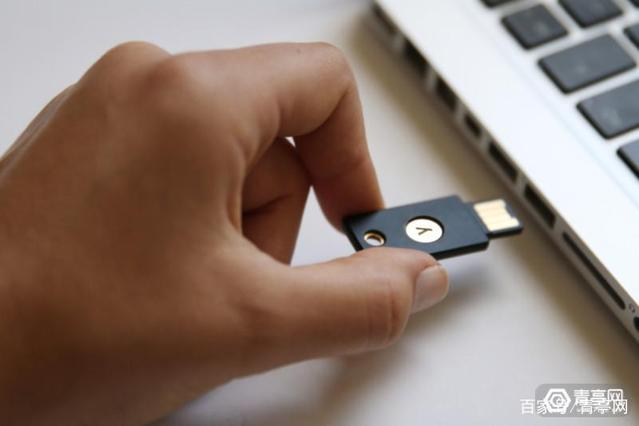
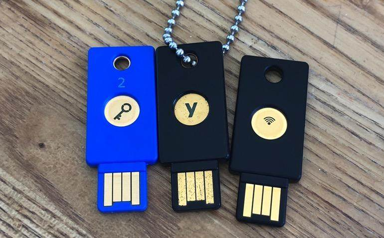
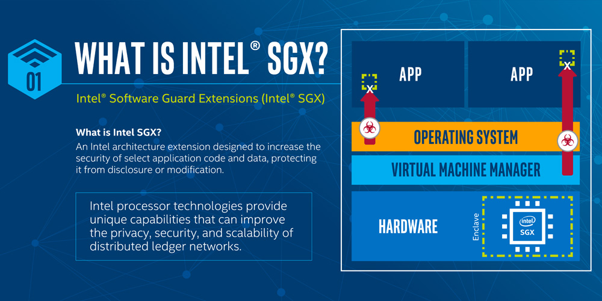

|
欢迎来到张帆的中文主页 计算机科学与技术学院 浙江大学 |
| 我的主页 | 相关新闻 | 发表论著 | 科研活动 | 教学活动 | 奖励荣誉 | 相关信息 | 我的学生 |  |
 |
|
相关链接:
|
硬件安全
密码芯片的安全性遵循“木桶理论”和“短板效应”，即安全性取决于最薄弱环节。密码芯片中密码算法的设计安全性并不等同于算法的实现安全性。密码算法在芯片中运行时会产生时间、功耗、电磁、声音、故障输出等旁路泄露，这些旁路泄露同芯片中运行的密码算法的中间状态和运算操作存在一定的相关性，可用来进行秘密信息提取，此类攻击技术称之为旁路攻击或侧信道攻击。
芯片银行卡
芯片银行卡又称为金融IC卡，是以芯片作为介质的银行卡。芯片卡容量大，可以存储密钥、数字证书、指纹等信息，其工作原理类似于微型计算机，能够同时处理多种功能，为持卡人提供一卡多用的便利。 金融IC卡是现代信息技术与金融服务高度融合的工具,采用芯片技术与金融行业标准,可兼具银行卡、保障卡、管理卡等多重功能，具有安全性、便利性、标准性和可扩展性等优点。
 | ||
| 磁条卡和接触式芯片卡 | 非接触式芯片卡 |
USIM和eSIM
USIM是Universal Subscriber Identity Module（全球用户识别卡）的缩写。除能够支持多应用之外，USIM卡还在安全性方面对算法进行了升级，并增加了卡对网络的认证功能，这种双向认证可以有效防止黑客对卡片的攻击。该技术可以作为GSM网络的另一种高速数据业务载体，它将成为第二代到第三代移动通信SIM卡良好过渡的技术依托，该技术早在1991年就被提出来作为研究方向，UMTS除支持现有的一些固定和移动业务外，还提供全新的交互式多媒体业务。UMTS使用ITU分配的、用于陆地和卫星无线通信的频带。它可通过移动或固定、公用或专用网络接入，与GSM和IP兼容。
eSIM卡，即Embedded-SIM，嵌入式SIM卡。eSIM卡的概念就是将传统SIM卡直接嵌入到设备芯片上，而不是作为独立的可移除零部件加入设备中，用户无需插入物理SIM卡，如同早年的小灵通。这一做法将允许用户更加灵活的选择运营商套餐，或者在无需解锁设备、购买新设备的前提下随时更换运营商。未来通用的eSIM标准建立将为普通消费者、企业用户节省更多移动设备使用成本，并带来更多的便利、安全性。2018年 3月7日，中国联通宣布，正式在上海、天津、广州、深圳、郑州、长沙6座城市率先启动“eSIM一号双终端”业务的办理。5月25日，中移物联正式推出智能物联China Mobile Inside计划，同时发布国内首款eSIM芯片，提供“芯片+eSIM+连接服务”。
 |  | |
| USIM | eSIM |
FIDO U2F和Yubikey
FIDO(Fast IDentity Online联盟)是一个基于标准、可互操作的身份认证生态系统。U2F(Universal 2nd Factor)是FIDO联盟提出的使用标准公钥密码学技术提供更强有力的身份认证协议。U2F在常用的用户名/密码的认证基础上又增加了一层第二因子(2nd Factor)的保护，这重保护是通过物理硬件来支持的。
YubiKey是一个同时支持OTP、公钥加密签名和U2F协议的硬件认证装置。该装置其貌不扬，看起来就像一个USB内存棒。由于提供了NFC功能，所以需要解锁验证时仅需将与装置接触，然后用其上面的键盘输入一次性密码（OTG）来解锁设备。
最近YubiKey宣布了一个大信息，就是开始正式支持iPhone，iPhone用户可以用其验证登录各类常用App，例如Gmail、Facebook、所有支持两步验证的网站等。虽然要带多一件产品好像麻烦了不少，但是相较于传统的方式更加安全可靠。
 |  | |
| 基于声音的旁路攻击 | 分析GnuPG RSA的解密密钥 |
硬件隔离执行环境SGX
SGX全称Intel Software Guard Extensions，顾名思义，其是对因特尔体系（IA）的一个扩展，用于增强软件的安全性。这种方式并不是识别和隔离平台上的所有恶意软件，而是将合法软件的安全操作封装在一个enclave中，保护其不受恶意软件的攻击，特权或者非特权的软件都无法访问enclave，也就是说，一旦软件和数据位于enclave中，即便操作系统或者和VMM（Hypervisor）也无法影响enclave里面的代码和数据。Enclave的安全边界只包含CPU和它自身。SGX创建的enclave也可以理解为一个可信执行环境TEE（Trusted Execution Environment）。不过其与ARM TrustZone（TZ）还是有一点小区别的，TZ中通过CPU划分为两个隔离环境（安全世界和正常世界），两者之间通过SMC指令通信；而SGX中一个CPU可以运行多个安全enclaves，并发执行亦可。
 |
| Intel SGX |
针对人工智能芯片的旁路分析逆向
小公司B和C都买了一个大公司A的芯片，进行了智能语音的开发，提出了各自的产品。其产品的核心竞争力在于B和C在A的基础上的人工智能算法的设计。 问题是：B和C用的是同一个物理芯片，那么B能够知道C用的CNN还是RNN吗？如果是RNN，那么用了几层？C调出来的参数是什么？ 针对人工智能芯片这个硬件载体，使用旁路或者故障分析等方法来进行相关的逆向，这个方面的科研目前正处于非常前沿的阶段。
| 人工智能芯片 |
最后一次更新时间:
版权所有©2026: 张帆